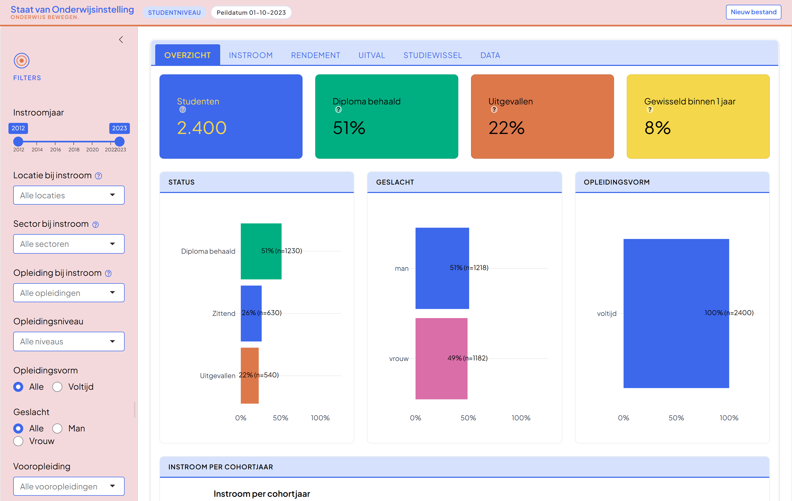
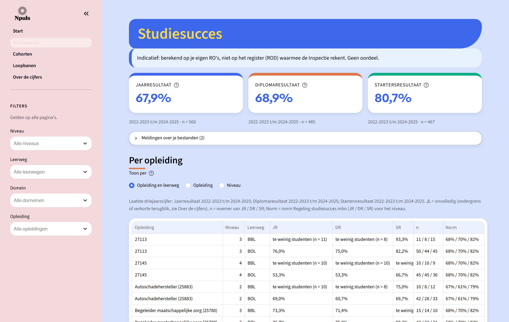

HO
Hogescholen en universiteiten · bron: 1CijferHO (DUO)

Tabblad Overzicht: kerncijfers, status en instroom
MBO
Roc's, aoc's en vakinstellingen · bron: Registratieoverzicht (DUO)

Pagina Studiesucces: jaar-, diploma- en startersresultaat per opleiding
Wat hetzelfde is
- Zelfde vraag: hoe verloopt de studie van onze studenten?
- Kern: instroom, rendement, uitval en studiewissel per cohort
- Eigen DUO-data van de instelling, verwerkt op de eigen computer
- Bestand kiezen, verwerken, en direct een dashboard
- Filters op opleiding, niveau en cohort
- Uitleg en definitie bij elk cijfer
- Ook zonder dashboard te draaien (pipeline / commando) en uitvoer als CSV
- Npuls-huisstijl, open source, gratis te installeren
Wat anders is
| HO | MBO | |
|---|---|---|
| Bron | 1CijferHO: één bestand met de hele historie | Registratieoverzichten (RO): 5 leveringen samengevoegd tot 10 jaar |
| Voorstap | Eerst omzetten met de 1cijferho-tool | Samenvoegen zit in het dashboard zelf |
| Opbouw | Eén scherm met tabbladen: Overzicht, Instroom, Rendement, Uitval, Studiewissel, Data | Pagina's: Start, Studiesucces, Cohorten, Loopbanen, Over de cijfers |
| Rendement | Vaste termijnen: 3, 5 en 8 jaar | Per opleiding: nominale duur en nominale duur + 1 |
| Alleen hier | Vooropleiding en cijfers vooropleiding, benchmarkrapport (Excel) | Indicatoren van de Inspectie met norm, loopbanen (stapelen, op- en afstromen) |
| Indeling | Sector, locatie, opleidingsvorm | Niveau 1–4, leerweg BOL/BBL, domein, crebo |
| Techniek | R, Shiny, CRAN | Python, Streamlit |